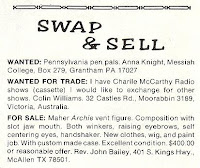
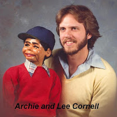
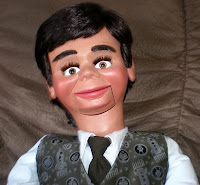

Then: Swap & Sell; Now: Show & Tell
6/7/2011
{kind=link}

From Lee Cornell:.
A couple weeks ago you posted a photo and story about the 40th anniversary of Maher Studios featured on the 1980 cover of Volume 37, Issue 1 of Newsy Vents. It made me want to dig out my copy to read through again and I realized there was something else special about that issue which I had forgotten.
{kind=link}

.
In the "Swap and Sell" classified section was a listing for a Maher "Archie" figure. I ended up purchasing that figure and it was my first real "pro" dummy (1980's photo at right). I had been using one of your Danny 400's and a Pelham puppet for years before that purchase. I used the figure for several years before I eventually sold him.
.
Several years ago I did purchase another Archie (I think nostalgia got the best of me when you offered it for sale), only it was the basswood version you had completely restored (below left). I still have that dummy. I think Archie was one of the most popular Maher characters in its day.
{kind=link}

Thanks again for your initial post - it brought back some great memories of my first professional dummy.
The Lee Cornell Show: http://www.leecornellshow.com/